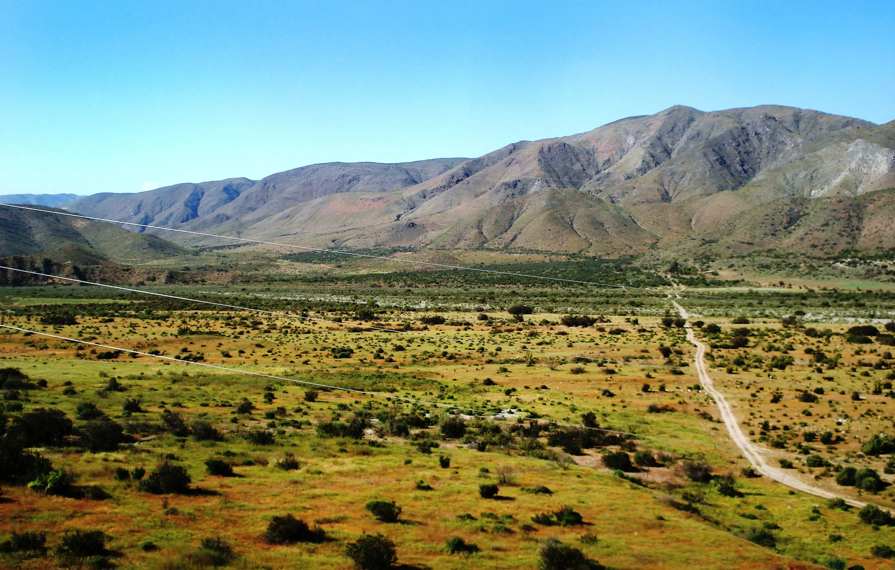

Place: Mexico

Mexico
Population:
Approximately 130.1 million people
[1]
Per Capita GDP:
$23,654 USD
[1]
Real GDP Growth Rate:
Projected to be 2.0%
[2]
Agricultural Land:
74,269,000 hectares
[1]
Weather
⛅